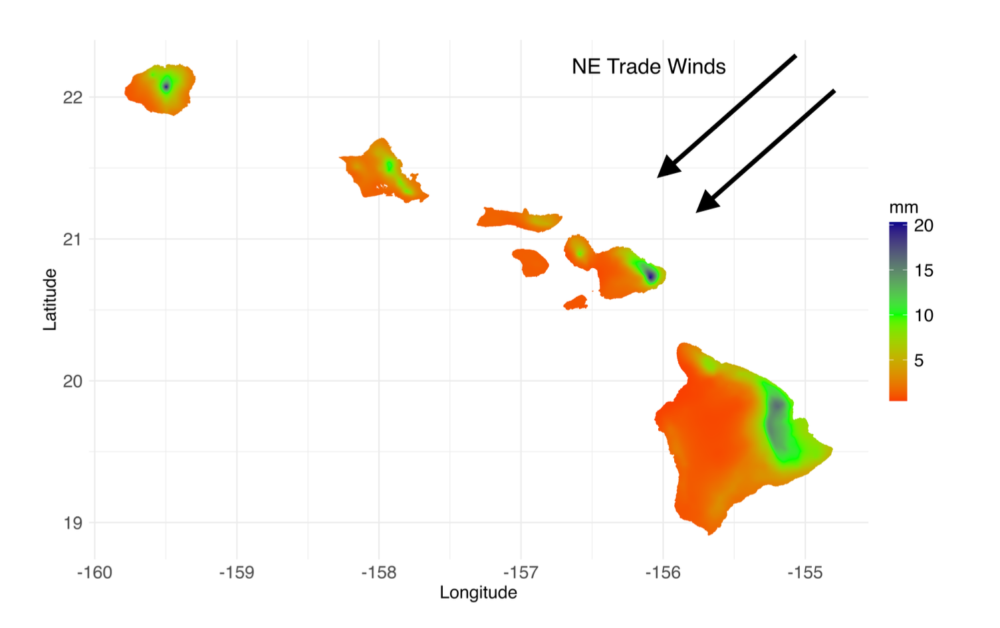
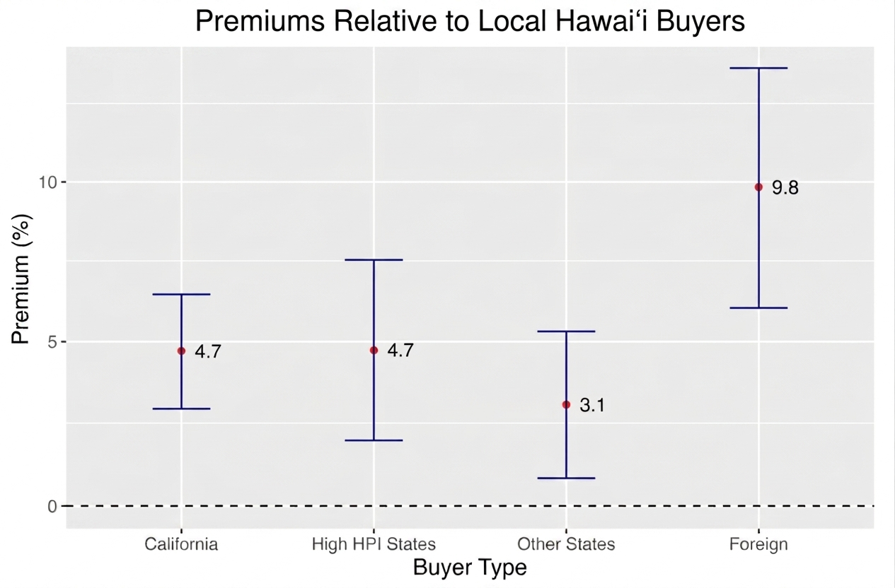
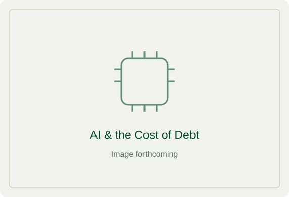

Published Work
Sea level rise impacts on residential real estate value in Hawaiʻi
Muhammad Talal Khan, Nori Tarui, Conrad Newfield, & Makena Coffman
Climatic Change (2025) DOI
Abstract
This paper examines the impact of sea level rise (SLR) exposure on residential property values in Hawaiʻi by employing a repeat sales methodology on coastal properties transacted between 2000 and 2022. Our analysis reveals that properties exposed to a projected 3 ft of SLR appreciate by 0.8% less annually than unexposed properties. This depreciation effect is particularly pronounced on Oʻahu (-1.4% annually) and Hawaiʻi Island (-1.1% annually). The discount is in part explained by local buyers, with properties they purchase incurring a significantly higher annual penalty compared to those acquired by non-local buyers. Seawalls are associated with higher home appreciation rates; however, they do not offset the penalty associated with SLR exposure. Our work provides new evidence on the forward-looking capitalization of climate change exposure into housing markets, demonstrating that buyer origin—potentially representing differing beliefs or knowledge of risk—has a significant influence.
PDF Media Coverage
Teaching strategies and key issues in American Indian and Alaska Native education
Muhammad Talal Khan, & Sakiko Ikoma
Journal of Computational Social Science (2026) DOI
Abstract
Educating students from diverse cultural backgrounds, particularly American Indian and Alaska Native (AI/AN), presents unique challenges and opportunities. Using unsupervised machine learning methods and drawing on textual open-ended survey responses from teachers, this study sheds light on salient themes about effective teaching strategies and important issues in an educational context. Our analysis identifies 20 topics related to effective strategies and 21 concerning important issues. Building student relationships is the most prevalent substantive strategy topic, while family involvement and socioeconomic challenges are prominent in the important-issues responses. Estimated topic prevalence varies by grade level, AI/AN student density, and school type within the retained corpus. These associations describe teachers’ reported emphases, not demonstrated instructional effects or the incidence of challenges among AI/AN students.
Working Papers

Pricing Compound Climate Hazards: Rainfall, Fire Risk, and Housing Prices in Hawai‘i
Muhammad Talal Khan, Nori Tarui, Makena Coffman, & Peter Fuleky
Revisions Requested at Resource and Energy Economics
Abstract
We examine how housing markets price compound climate hazards, using residential transactions in Hawai‘i, a setting where fine-scale rainfall variation and wildfire exposure coexist. We show that the price penalty associated with recent rainfall anomalies is smaller in excessive-fire-risk areas. Relative to local historical norms, a one-standard-deviation increase in rainfall the year preceding sale is associated with 1.9% lower housing prices in low-fire-risk areas but only 0.8% lower prices in excessive-fire-risk areas. Based on these findings and other placebo test results, our interpretation is that buyers read recent rainfall as a sign of lower wildfire risk. Our finding suggests that it is important to account for compound hazards in housing risk assessment and policy.

Paradise Premiums: Buyer Origin, Information Frictions, and Housing Affordability in Hawai‘i
Muhammad Talal Khan, & Gregory A. Gillis
Working Paper
Abstract
We study the relationship between buyer origin, housing prices, and local economic outcomes in Hawai’i. Using transaction-level data, we show that nonlocal buyers pay on average 3.3–3.9 percent premium for comparable properties. Wealth and conventional preference sorting cannot fully account for the evidence. Variation across buyer origins, time, and market liquidity provides evidence consistent with information frictions and anchoring as contributing explanations. At the ZIP level, nonlocal demand is associated with higher prices but not employment, business activity, or net residential displacement once persistent differences across ZIP codes are absorbed. An illustrative decomposition suggests that buyer-composition shifts account for little price growth in the median ZIP, with larger implied contributions concentrated in parts of Maui and Hawai’i Island. Our results suggest that while demand-side policies may offer localized relief in markets with concentrated nonlocal demand, they are unlikely to improve aggregate statewide affordability absent supply-side reform.

Artificial Intelligence and the Cost of Debt
Jiakai Chen, & Muhammad Talal Khan
Working Paper
Abstract
We study how artificial intelligence adoption affects corporate borrowing costs using firm-level AI intensity measures and syndicated loan data from 2000 to 2022. AI-intensive firms pay loan spreads that are 3.5% higher than comparable non-AI firms. These higher spreads are accompanied by contract terms consistent with greater informational opacity, particularly heightened monitoring costs post-origination. The premium is attenuated when firms borrow from AI-specialized lenders and is concentrated among firms with weaker pre-existing information environments. We confirm the causal interpretation of our results using Covariate Balancing Propensity Score (CBPS) weighting, and separately, a shift-share instrumental-variable approach exploiting the diffusion of European academic AI research and declining computing costs.
Other Work
Hawaiʻi Greenhouse Gas Emissions Report for 2005, 2018, and 2019
ICF and University of Hawaiʻi Economic Research Organization (2023)
Hawaiʻi State Department of Health, Clean Air Branch
Summary
This greenhouse gas inventory informs the Hawaiʻi Priority Climate Action Plan (2024), “Aʻohe hana nui ke alu ʻia: No task is too big when done together,” prepared under the U.S. Environmental Protection Agency’s Climate Pollution Reduction Grants (CPRG) program.